CalmBridge: Wellness & Care Dashboard
Bridging emotional insights with proactive intervention.
CalmBridge is a wellness & care dashboard designed to support both
individuals and therapists through connected emotional insights.
Created as part of a 2 Weeks Dashboard Workshop, the platform helps users track emotional well-being while enabling therapists to
identify risks and provide proactive support.
The experience was built through a research-driven UX process
focused on accessibility, clarity, and emotionally safe interactions.

Most wellness experiences are reactive. CalmBridge is designed around continuous emotional visibility and proactive support.

Project Overview
Bridging emotional awareness and therapist intervention through thoughtful UX design.
CalmBridge is a Mental Health & Stress Management Dashboard designed to help individuals track emotional well-being and enable therapists to proactively monitor high-risk patients.
The project was created as part of a 10-day UX workshop conducted by
DesignBoat, with the goal of designing an emotionally
safe, insight-driven, and user-friendly healthcare dashboard experience.
The challenge was to simplify complex emotional and behavioral data into actionable
insights for two different user groups while maintaining clarity, empathy, and usability throughout the experience.
Using a structured UX process that included research, user interviews, information architecture, task flows, wireframing, and UI design, the final solution focused on two key workflows — Daily Mood & Stress Tracking for Individuals and Critical Alerts & High-Risk Patient Monitoring for Therapists.
Before designing the solution, it was important to understand how individuals experience emotional stress and how therapists respond to critical situations.
The CalmBridge UX Process
Turning emotional complexity into structured user experiences
What I Knew
01Secondary Research : Understanding the mental health landscape and identifying early assumptions.
What I Asked
02User Interviews : Defining the right questions to uncover real user needs and emotional behaviors.
What I Found
03Research Synthesis : Turning research into actionable insights, patterns, and opportunities.
What I Framed
04Problem Framing : Shaping clear problems to solve with focused UX goals.
What I Mapped
05Experience Architecture : Exploring user flows, wireframes, and possible solution directions.
What I Chose
06Design Decisions : Making strategic UX decisions that balance usability, clarity, and emotional comfort.
What I Learned
07Key Takeaways : Reflecting on outcomes to improve experiences, empathy, and design thinking.
What I Knew
Exploring the gaps between emotional awareness and intervention.
Before defining the problem, I wanted to understand how mental health support currently works, where the gaps exist, and what both individuals and therapists truly need from a tracking system.
Our secondary research helped us understand how mental health support systems operate and the different responsibilities shared between individuals and therapists.
Through the research, we explored:
- How individuals currently track and reflect on their mental well-being
- The emotional and behavioral patterns associated with stress and anxiety
- How therapists monitor patient progress and identify risks
- Existing gaps between therapy sessions and continuous emotional support
- The different tasks, goals, and expectations of both user groups
- Opportunities where digital tools could improve visibility, awareness, and intervention
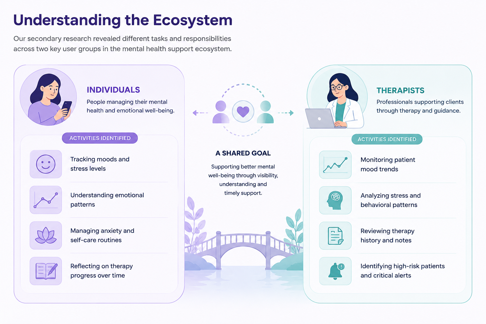
The research revealed two primary user groups within the ecosystem:
Individuals
People managing stress, anxiety, emotional well-being, and personal mental health journeys.
Through the research, we identified several recurring activities such as:
- Tracking moods and stress levels
- Understanding emotional patterns
- Managing anxiety and self-care routines
- Reflecting on therapy progress over time
- Setting personal wellness goals
- Practicing mindfulness and relaxation exercises
- Maintaining daily journals and emotional logs
- Scheduling therapy sessions and reminders
- Accessing mental health resources and coping strategies
*(These are a few important tasks identified during the research; individuals are involved in many other activities within their mental health journey.)*
Therapists
Mental health professionals responsible for monitoring patient progress and providing timely intervention.
Their workflows commonly involved:
- Monitoring patient mood trends
- Analyzing stress and behavioral patterns
- Reviewing therapy history and notes
- Identifying high-risk patients and critical alerts
- Conducting patient assessments and evaluations
- Creating personalized treatment plans
- Tracking therapy outcomes and recovery progress
- Managing appointments and follow-ups
- Communicating recommendations and support strategies
*(These are a few important tasks highlighted from the research; therapists handle many additional responsibilities as part of mental health care management.)*
These findings helped establish a broader understanding of the mental health ecosystem and the different challenges faced by both user groups.
What I Asked
Defining the right questions to uncover real user needs.
Secondary research gave us assumptions. Conversations helped us validate them.
To validate the insights gathered during secondary research, I conducted structured interviews with both individuals managing their mental health and therapists supporting patients between sessions.
The goal was to understand their behaviors, emotional challenges, workflows, and expectations from a mental health support system.
Research Focus Areas
Individuals
Explored user actions, reflections, and habits around mental health self-tracking.
- Mood tracking habits
- Emotional reflection behavior
- Stress management challenges
- Motivation & consistency issues
- Privacy & sharing preferences
Therapists
Explored monitoring, assessment workflows, and patient caseload demands.
- Monitoring patients between sessions
- Identifying critical risk patterns
- Managing high caseloads
- Reviewing emotional trends quickly
- Need for alerts & intervention tools
Questionnaire Focus Areas
Individuals (User Questionnaire)
20 Questions focused on self-tracking & coping
behaviors
1. Mood Tracking & Friction
- What type of input interface (like emojis or text) would best fit your mood tracking habits, and why?
- What kind of context (such as work or relationships) is most helpful for you to record when logging your mood, and why?
- How do you feel mood trend graphs affect your understanding of your own emotional patterns?
- How do you overcome the initial resistance or forgetfulness when trying to build a consistent habit of logging your mood?
2. Review Cycles & Insights
- In what ways do you envision reviewing your emotional history to identify key patterns or changes?
- How would you use weekly versus monthly summaries of your emotional patterns to reflect on your well-being?
- What type of format—such as graphs, written text, or AI suggestions—would make insights most actionable for you, and why?
- How do you feel when you notice a disconnect between your remembered emotional state and what your logged history actually shows?
3. Stress, Anxiety & Interventions
- How do you currently monitor or recognize changes in your stress and anxiety levels?
- What format (such as a 1-10 scale or guided prompts) would best help you articulate your stress levels, and why?
- Under what conditions would stress check-in reminders feel helpful versus intrusive to you?
- In what ways could additional insights, such as AI-driven coping tips, support you during moments of high stress or anxiety?
4. Self-Care & Therapy Connections
- How do you currently practice and maintain self-care activities (such as meditation or journaling) in your daily life?
- How do you think daily self-care challenges would influence your long-term engagement?
- How would you describe your preference for structured self-care guidance versus the freedom to choose your own activities, and why?
- How do you feel about gamification elements, like streaks or rewards, when applied to your personal self-care?
- How would having a dedicated space to store and review therapy session notes impact your reflection process?
- What does your reflection process look like after a therapy session, and what barriers keep you from writing it down?
- How would structured prompts from your therapist help you reflect on your progress between sessions?
- In what ways would sharing your daily mood logs with your therapist change the dynamics of your therapy sessions?
Therapists (Clinical Questionnaire)
20 Questions focused on monitoring, notes & clinical
alerts
1. Patient Monitoring & Trends
- How do you think a visual mood trend graph would impact your ability to assess a patient's progress over time?
- How do you envision integrating the review of a patient's inter-session mood logs into your existing clinical workflow?
- How would having patients tag their logged emotions with specific events, like work stress, assist in your clinical analysis?
- In what ways does historical mood trajectory help you identify patterns or triggers that a patient might not recall or report during a session?
2. Stress Assessment & Insights
- How do you currently assess patient stress & anxiety levels outside sessions?
- How would a stress level trend chart influence your clinical evaluations and treatment planning for patients?
- What specific types of clinical insights do you expect to gain from tracking patient stress and anxiety over time, and how would you apply them?
- In what ways would comparing a patient's self-reported stress with your observed assessment help clarify their clinical picture?
3. Clinical Notes & Progress Tracking
- How do you currently document session notes and therapy progress?
- How would an automated session summary system change the way you prepare for future therapy sessions?
- How do you weigh the clinical advantages and limitations of structured templates versus freeform text input in your note-taking workflow?
- How does having instant access to historical session insights impact the flow and quality of a live therapy session?
4. Self-Care Adherence & Crisis Alerts
- What types of self-care or reflection tasks do you typically assign to patients, and how do you monitor them?
- How would a built-in recommendations system affect your process of assigning exercises to patients?
- In what ways would you prefer to monitor and review patient adherence to assigned therapy exercises?
- In what ways would real-time alerts regarding a patient's mood deterioration change your intervention timeline?
- How would you define the threshold and criteria for critical alerts (such as prolonged sadness or crisis signals) that require your immediate clinical attention?
- How would an AI-powered flagging system for high-risk cases integrate with your current clinical risk management?
- What notification channels (like email, SMS, or dashboard alerts) would best support your workflow during critical patient mood shifts, and why?
- How do you establish boundaries and response protocols with patients when utilizing real-time digital monitoring and alerts?
What I Found
Research gave direction. Conversations gave clarity.
The strongest insights came not just from studying the problem, but from listening to people experiencing it.
This phase transformed research into clarity. By combining insights from secondary research and user interviews, I identified recurring behaviors, emotional gaps, and operational challenges faced by both individuals and therapists. These findings helped uncover not just what users needed, but why those needs mattered in real-life mental health experiences.
Key Insights
Secondary Research & Interviews
Individuals
- Mental health tracking was often inconsistent and emotionally exhausting.
- Users preferred quick, low-effort interactions over detailed journaling.
- Visual feedback and guided self-reflection increased engagement.
- Users wanted privacy and control before sharing emotional data with therapists.
- Mood tracking alone wasn’t enough — users needed context, triggers, and encouragement.
Therapists
- Therapists relied heavily on self-reported session updates.
- Tracking emotional patterns between sessions was difficult.
- Manual documentation increased administrative burden.
- Early risk detection was challenging without structured data.
- Therapists needed faster ways to prioritize high-risk patients and emotional changes.
Behavioural Patterns
How Personas Interact Naturally
Individual Behaviour
- Users preferred emoji-based mood logging over long text entries.
- Emotional tracking happened more during stressful periods than stable periods.
- Users engaged better with reminders, streaks, and visual progress indicators.
- Reflection was more likely when prompts were optional and non-intrusive.
- Many users wanted emotional support without feeling monitored.
Therapist Behaviour
- Therapists prioritized urgent emotional signals first.
- Most therapists combined instinct with fragmented patient updates.
- Therapists preferred summarized trends instead of raw emotional logs.
- Decision-making improved when insights were visual and prioritized.
- Therapists needed quick intervention workflows due to high cognitive load.
Individual Users
Pain Point
Opportunity Area
Forgetting to log moods consistently
Create frictionless daily check-ins
Difficulty connecting emotions with triggers
Simplify reflection using guided prompts
Low motivation to maintain self-care routines
Encourage consistency through nudges and streaks
Lack of actionable insights & unstructured reflections
Turn emotional data into actionable self-awareness
Concerns around sharing sensitive data
Build trust with privacy-first sharing controls
Therapists
Pain Point
Opportunity Area
Limited visibility between therapy sessions
Enable real-time emotional monitoring
Difficulty identifying high-risk patients early
Surface critical alerts automatically
Time-consuming note-taking and documentation
Reduce manual documentation effort
Lack of centralized emotional trend tracking
Centralize patient insights into a single workflow
Managing large caseloads efficiently
Improve risk prioritization with visual trends
User Personas
Goals
- Track moods consistently
- Improve emotional self-awareness
- Maintain stress-management habits
- Share selective emotional insights safely
Frustrations
- Forgetting to track moods
- Low motivation for journaling
- Difficulty identifying emotional patterns
- Feeling overwhelmed by complex interfaces
Needs
- Fast and intuitive tracking
- Visual emotional insights
- Personalized nudges
- Privacy-first experience
Goals
- Detect emotional risks early
- Monitor patient trends efficiently
- Reduce administrative effort
- Improve intervention speed
Frustrations
- Fragmented patient updates
- Manual documentation overload
- Delayed identification of high-risk behaviour
- Lack of structured emotional visibility
Needs
- Centralized patient insights
- Real-time alerts
- AI-supported summaries
- Efficient workflow management
What I Framed
Transforming Research Insights into Actionable Problem Statements
Before defining solutions, I first mapped the tasks users were trying to accomplish and uncovered the problems hidden within those workflows.
Research helped me understand not only the challenges faced by individuals and therapists, but also the tasks they perform while managing mental health. By analyzing these tasks, I was able to uncover underlying pain points and identify the problems preventing users from achieving their goals effectively. Since the workshop timeline was limited, I prioritized the most impactful opportunities and focused on solving the problems that could create the greatest value for both user groups.
Tasks Identified from Research
Individual Users
Research revealed that individuals were primarily trying to:
Therapists
Research revealed that therapists were primarily trying to:
Problems Identified
Problem 1
Difficulty Maintaining Consistent Mood & Stress Tracking
Users struggled to regularly track moods and stress levels, making emotional awareness difficult to sustain.
Problem 2
Limited Awareness of Stress Triggers & Emotional Patterns
Users found it difficult to understand what influenced their emotions and recognize patterns over time.
Problem 3
Lack of Structured Support for Mental Wellness
Users needed guidance, self-care activities, and goal-driven support beyond simple mood logging.
Problem 4
Limited Visibility Into Client Mental Health Between Sessions
Therapists lacked continuous insight into emotional changes occurring outside therapy sessions.
Problem 5
Difficulty Identifying Critical Alerts & High-Risk Patients
Therapists struggled to quickly identify individuals requiring immediate attention.
Problem Prioritization
To narrow the scope within the workshop timeline, each problem was evaluated based on (hover to see relevance)(click to see relevance):
User
Impact
Emotional
Urgency
Frequency
of Occurrence
Feasibility
Within Available Time
Priority
Level
Problem Area
P1
Critical
Difficulty Identifying Critical Alerts & High-Risk Patients
P2
High
Difficulty Maintaining Consistent Mood & Stress Tracking
P3
Medium
Limited Visibility Into Client Mental Health Between Sessions
P4
Muted
Limited Awareness of Stress Triggers & Emotional Patterns
P5
Muted
Lack of Structured Support for Mental Wellness
Selected Tasks & Justification
While all five problems were important, two opportunities stood out because of their impact, urgency, and feasibility.
Individual User
Daily Mood & Stress Level Tracking
- Most frequent activity performed by individuals
- Foundation for emotional awareness
- Enables future insights such as progress tracking and trigger analysis
- Directly supports long-term habit formation
Therapist
Identifying Critical Alerts & High-Risk Patients
- Highest-priority therapist challenge
- Direct impact on patient well-being
- Supports proactive intervention
- Helps therapists manage multiple clients effectively
5 Whys & Root Cause Analysis
Daily Mood & Stress Level Tracking
1
Why do users fail to track moods consistently?
Tracking emotions feels repetitive.
2
Why does it feel repetitive?
Users manually enter similar information
every day.
3
Why is manual entry difficult?
It interrupts existing routines.
4
Why do users stop returning?
They don't receive immediate value from
tracking.
5
Why is value missing?
Most tools focus on recording emotions
instead of helping users understand them.
Root Cause
Current mood-tracking experiences prioritize data collection over emotional support, making long-term engagement difficult to sustain.
Identifying Critical Alerts & High-Risk Patients
1
Why are high-risk patients difficult to identify?
Emotional changes happen between sessions.
2
Why are these changes difficult to observe?
Therapists rely on periodic interactions.
3
Why are periodic interactions insufficient?
Warning signs can emerge at any time.
4
Why are warning signs missed?
Emotional information is fragmented across
multiple sources.
5
Why is fragmented information problematic?
Therapists lack a centralized way to
prioritize urgent cases.
Root Cause
Therapists need centralized visibility and alerts to detect critical risks before they escalate.
Problem Statements
Individual Users
Individuals find it difficult to consistently track moods and stress levels, limiting their ability to understand emotional patterns and maintain self-awareness over time.
Therapists
Therapists lack timely visibility into high-risk patients, making it challenging to identify critical warning signs and intervene before situations escalate.
With the problems clearly defined, the next step was understanding who we were designing for and mapping the journeys needed to solve them.
What I Mapped
Translating insights into experiences through flows, structure, and design exploration.
With the problems clearly defined, I began mapping user journeys, structuring information architecture, and exploring layout options to connect patients with therapists effectively.
User Tasks
To understand the steps users take to achieve their goals, I mapped the primary tasks for both individuals and therapists, ensuring the experience remained simple, efficient, and outcome-focused.
Individual User
Daily Mood & Stress Tracking
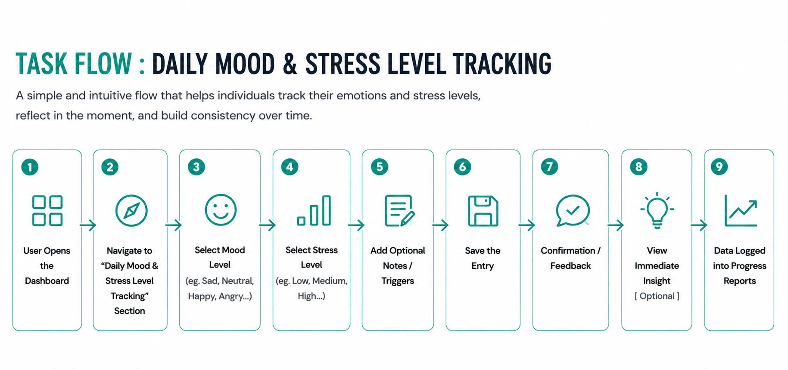
Key Highlights
- Low-friction emotional check-ins
- Optional reflection and context logging
- Immediate feedback and insights
- Progress tracking for self-awareness
Therapist
Identifying Critical Alerts & High-Risk Patients
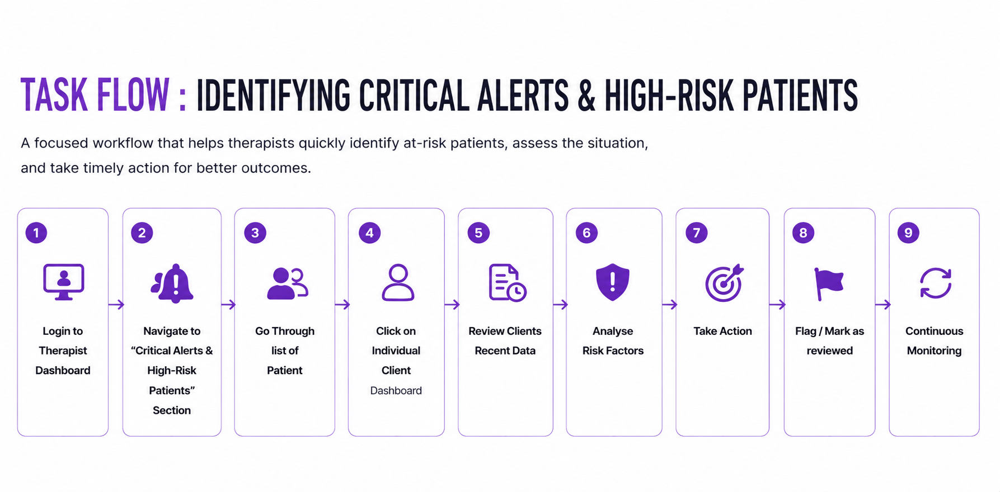
Key Highlights
- Alert-first workflow
- Faster risk assessment
- Clear intervention pathways
- Continuous patient monitoring
User Flow
After defining the key tasks, I mapped the complete user journeys to understand decision points, system responses, and the paths users take to achieve their goals.
Individual User
Daily Mood & Stress Tracking
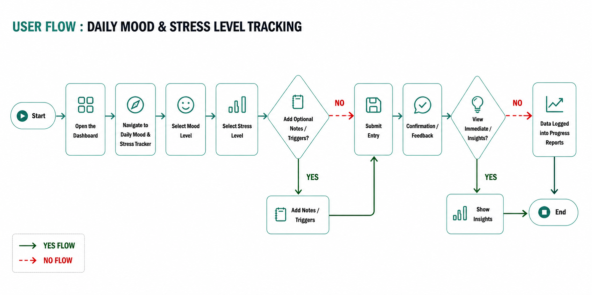
Key Insights
- Designed for quick and low-friction emotional check-ins.
- Supports optional reflection through notes and triggers.
- Provides immediate feedback to encourage consistent engagement.
- Connects daily entries with long-term progress tracking and insights.
Therapist
Identifying Critical Alerts & High-Risk Patients
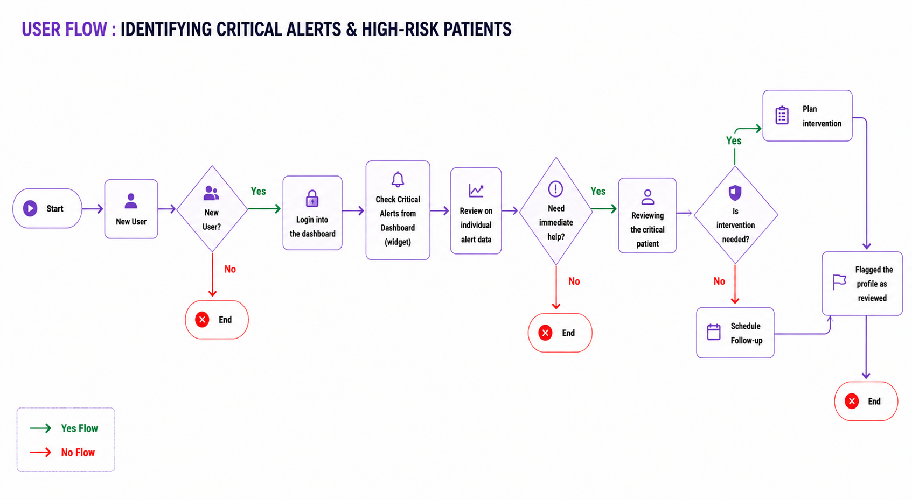
Key Insights
- Prioritizes critical alerts for faster identification of at-risk patients.
- Supports data-driven risk assessment before intervention.
- Enables clear decision pathways for intervention or follow-up.
- Promotes continuous monitoring and proactive patient care.
Information Architecture
With the journeys established, I structured the platform's information and navigation to help users find what they need quickly while reducing cognitive load.
Individual User
Daily Mood & Stress Tracking
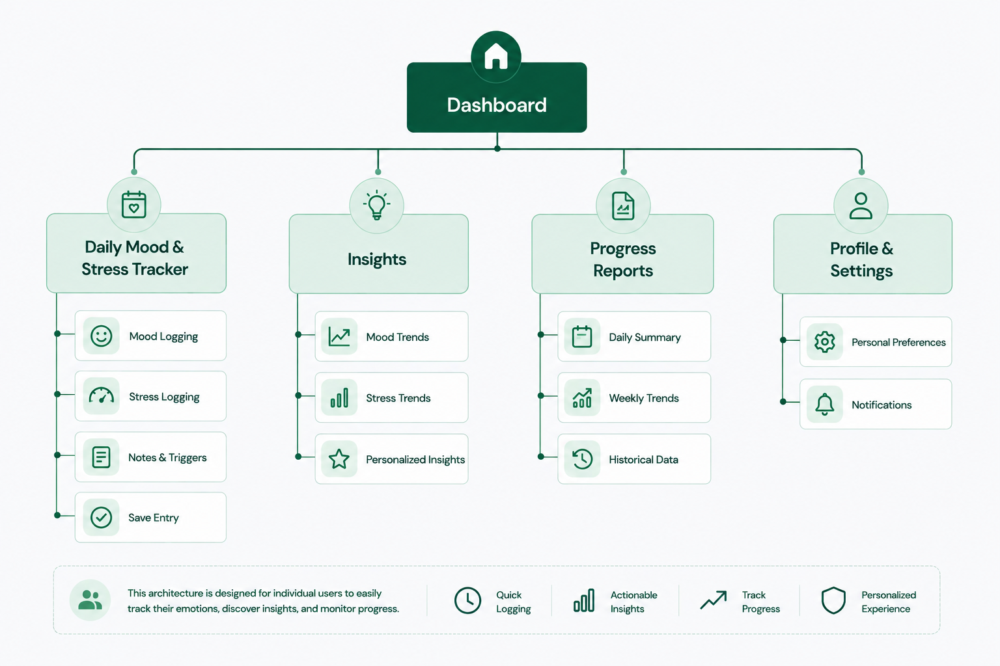
IA Principles
- Prioritized daily check-ins as the primary action.
- Reduced navigation depth for faster emotional logging.
- Connected mood entries directly to insights and reports.
- Organized information around self-awareness and progress tracking.
Therapist
Identifying Critical Alerts & High-Risk Patients
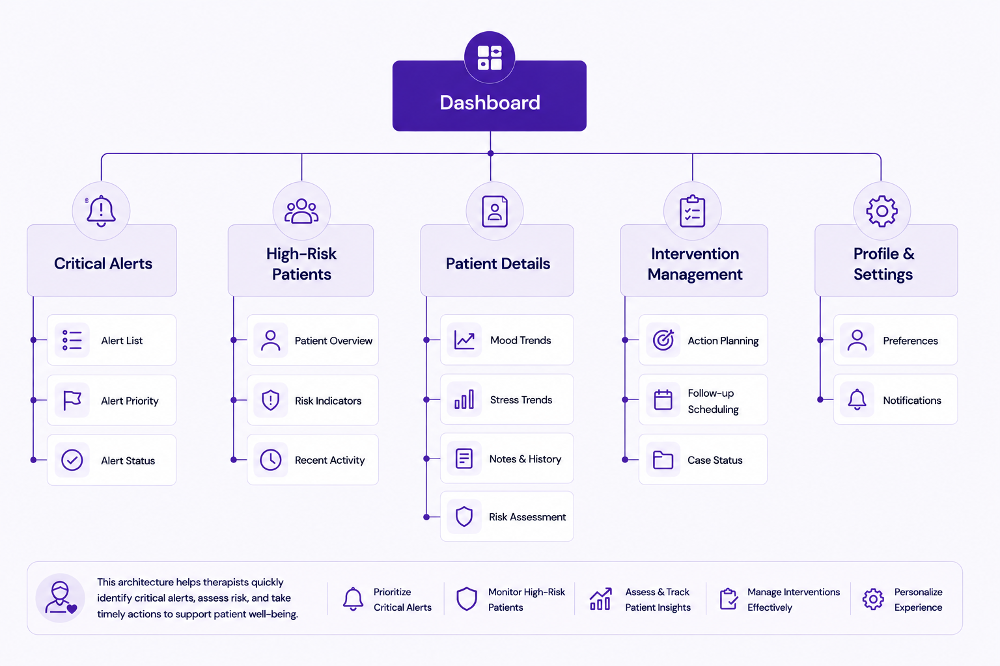
IA Principles
- Surfaced critical alerts at the highest level of the hierarchy.
- Structured patient information to support rapid assessment.
- Grouped intervention actions within a dedicated workflow.
- Enabled continuous monitoring through centralized patient visibility.
Feature Exploration
To address the identified user needs and pain points, I explored features that could support emotional tracking, risk monitoring, and timely interventions for both individuals and therapists.
Individual User
- Mood & Stress Tracking
- Notes & Trigger Logging
- Reflective Journaling
- Progress Reports
- Self-Care Recommendations
- Personalized Reminders
Therapist
- Critical Alerts Dashboard
- High-Risk Patient Monitoring
- Patient Risk Assessment
- Mood & Stress Trend Analysis
- AI-Powered Insights
- Intervention & Follow-up Actions
Key Outcome: Focused on a small set of high-impact features that directly addressed the prioritized problems while keeping the experience simple and actionable.
Dashboard Structure
Once the core features were defined, I organized them into dashboard layouts that prioritized the most important information, actions, and insights for each user type.
Individual Dashboard
Awareness → Reflection → Action
- Mood & Stress Logging
- Emotional Trends
- Top Triggers
- Progress Tracking
- Self-Care Activities
- Upcoming Sessions
Therapist Dashboard
Monitor → Assess → Intervene
- Critical Alerts
- Patient Overview
- Risk Distribution
- Recent Activity
- AI Insights
- Intervention Actions
Key Outcome: Structured dashboards around user goals rather than features, helping users quickly understand what requires attention and action.
Interaction Exploration
Beyond information structure, I explored interactions that could make emotional tracking effortless for individuals and decision-making faster for therapists.
Individual Interactions
- Emoji-based mood selection
- One-tap stress logging
- Progressive journaling flow
- Guided reflection prompts
- Positive feedback after submissions
Therapist Interactions
- Alert-first navigation
- Quick risk review
- Patient drill-down views
- Actionable intervention controls
- Status-based monitoring workflow
Key Outcome: Reduced cognitive effort while encouraging consistent engagement and timely action.
Wireframe
With the flows, structure, and interactions defined, I translated ideas into low-fidelity wireframes to validate layout, hierarchy, and usability before moving into visual design.
Version 1 → Information-Centric Dashboard


Challenge: High cognitive load
Reason: Too much information at once.
Reason: Too much information at once.
Challenge: Mood Tracking Competed with Dashboard
Content
Reason: Tracking and insights fought for attention.
Reason: Tracking and insights fought for attention.
Challenge: Reflection Activities Were Easy to
Overlook
Reason: Reflection prompts lacked visibility.
Reason: Reflection prompts lacked visibility.

Challenge: Monitoring and Intervention Lacked Clear
Separation
Reason: Assessment and action were not clearly distinguished.
Reason: Assessment and action were not clearly distinguished.
What Worked
- Comprehensive visibility of features
- Quick access to reports and insights
- Centralized monitoring for therapists
Challenges Identified
- High cognitive load
- Mood tracking competed with dashboard content
- Reflection activities were easy to overlook
- Monitoring and intervention lacked clear separation
UX Impact
Users had to process too much information before completing their primary task.
Business Impact
Potential drop in engagement and slower response to critical situations.
Transition: These observations led to a redesign focused on workflows rather than information density.
Version 2 → Workflow-Centric Experience

Key Improvement: Guided Mood Check-In Flow
A focused, step-by-step process for tracking moods.
A focused, step-by-step process for tracking moods.

Key Improvement: Progressive Disclosure
Information is revealed step-by-step to prevent overwhelm.
Information is revealed step-by-step to prevent overwhelm.


Key Improvement: Dedicated Therapist Intervention
Workflow
Clear separation of assessment and actionable interventions.
Clear separation of assessment and actionable interventions.

Key Improvement: Clearer Navigation Structure
Streamlined menus reduce cognitive load.
Streamlined menus reduce cognitive load.
Key Improvements
- Guided Mood Check-In Flow
- Progressive Disclosure
- Dedicated Therapist Intervention Workflow
- Clearer Navigation Structure
UX Impact
Reduced cognitive load, improved task completion, and better alignment with user mental models.
Business Impact
Increased engagement potential, faster therapist decision-making, and improved scalability for future growth.
Key Learning:
- Initially, I focused on surfacing all relevant information on a single dashboard.
- Through design exploration, I realized users benefited more from guided workflows than information density.
- This led to a shift from dashboard-centric screens to task-oriented experiences that improved usability and better supported both user and therapist goals.
What I Chose
Turning insights into intentional design decisions
Research helped me understand the problem. Exploration helped me evaluate possibilities. This phase was about making deliberate decisions—prioritizing what mattered most for users, therapists, and business outcomes.
Design Decisions That Shaped CalmBridge
Final Screen Direction
Focused on the two highest-priority journeys:
- Daily Mood & Stress Tracking
- Critical Alerts & High-Risk Monitoring
Dashboard Layout Decision
Organized dashboards around user priorities rather than features.
Individuals
Log → Reflect → Improve Therapists
Monitor → Assess → Act
Log → Reflect → Improve Therapists
Monitor → Assess → Act
Widget Prioritization
Prioritized information based on urgency and user value.
- Individuals: Mood Tracking, Stress Levels, Trends
- Therapists: Critical Alerts, Risk Levels, Patient Insights
Interaction Decisions
Reduced effort through quick actions and progressive disclosure.
- One-click mood logging
- Optional reflections
- Alert-first therapist workflows
Emotional Design Choices
Created a calm and supportive experience using:
- Reassuring visual language
- Emoji-based mood tracking
- Positive reinforcement and progress indicators
Accessibility Considerations
Designed for clarity during emotionally sensitive moments through high contrast, clear labels, and consistent navigation patterns.
Final Designs
Onboarding: Individual Users
Designed to create a welcoming first experience, helping users quickly understand CalmBridge, discover key features, and personalize their mental health journey from day one.
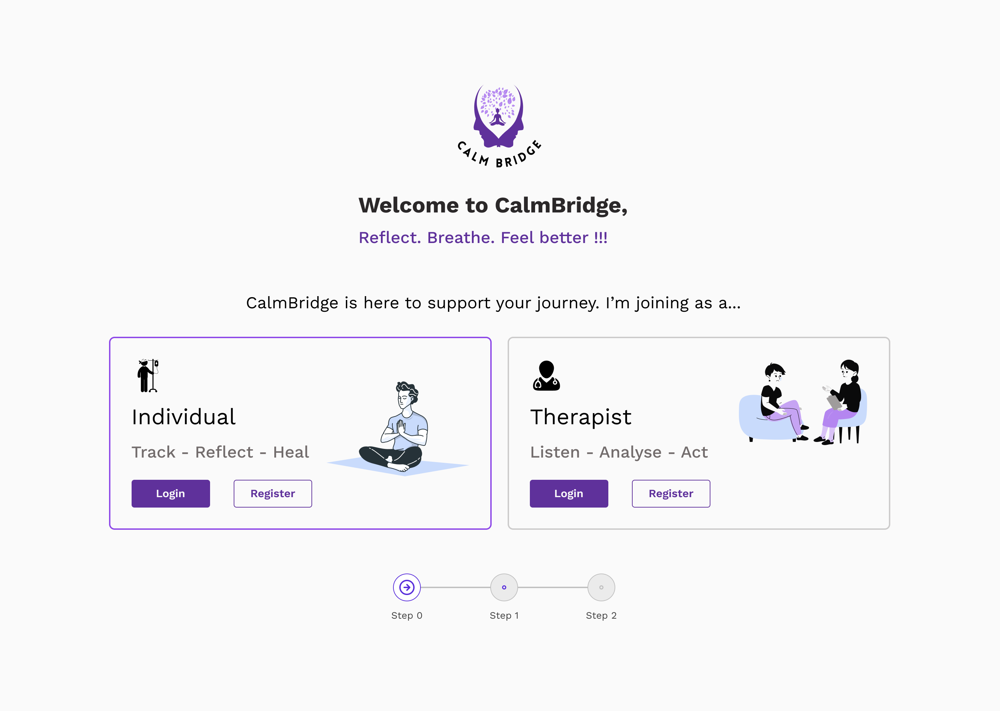
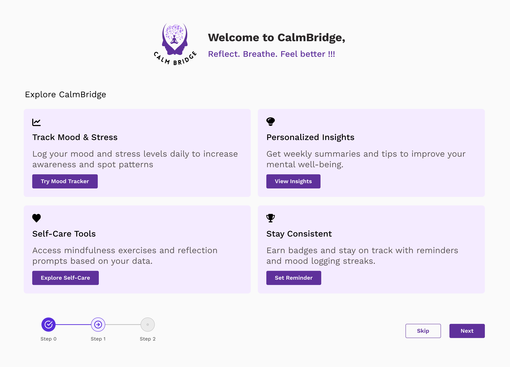
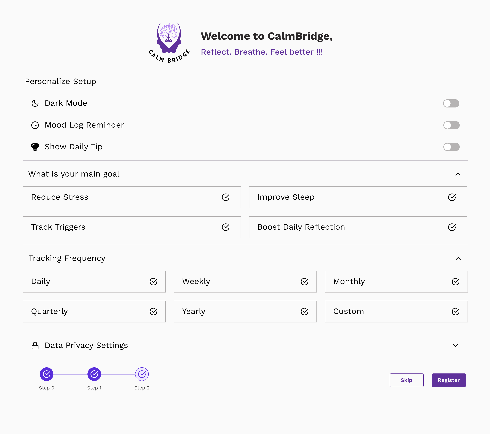
UX Impact
Reduced cognitive load and improved first-time user confidence through guided onboarding and personalized setup.
Business Impact
Expected to increase activation, onboarding completion, and early feature adoption by accelerating time-to-value.
Onboarding: Therapist
Designed to help therapists quickly understand platform capabilities, configure alert preferences, and start monitoring patients with confidence.
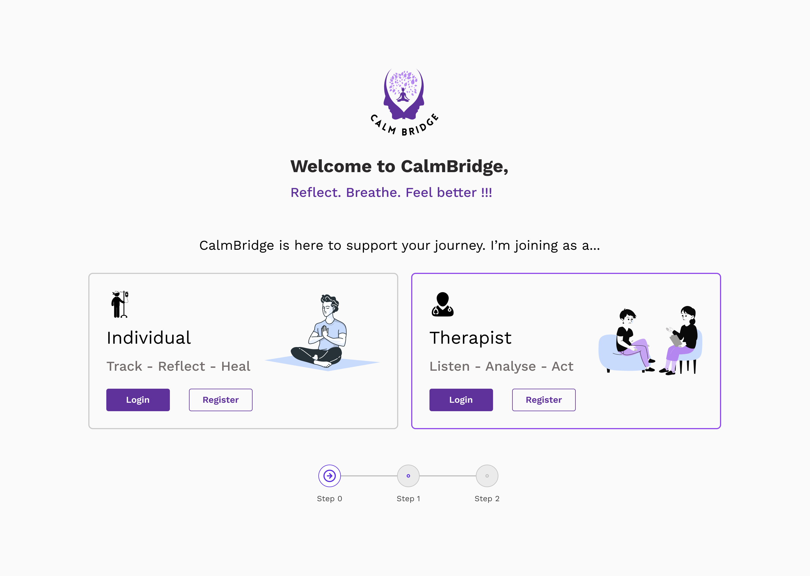
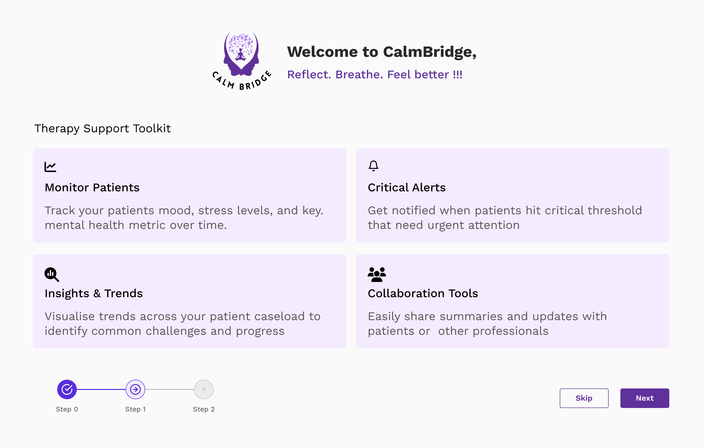
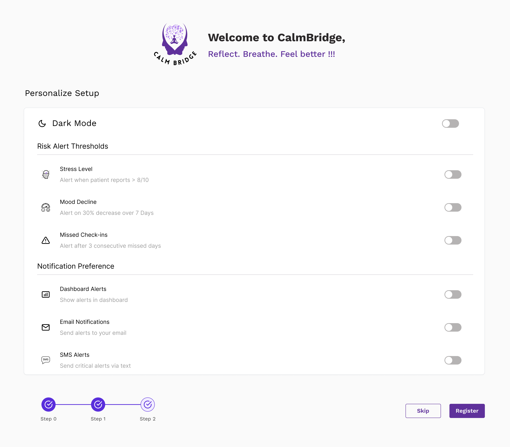
UX Impact
Designed to simplify onboarding through guided setup, feature discovery, and personalized alert configuration, reducing the effort required to get started.
Business Impact
Expected to increase activation, feature adoption, and engagement by helping therapists realize value faster and navigate critical workflows more effectively.
Individual Dashboard
Designed to help users build self-awareness through effortless mood tracking, stress monitoring, and personalized wellness guidance.
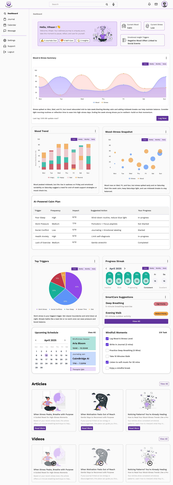
UX Impact
Designed to simplify mood tracking and self-reflection by consolidating key insights and wellness activities into one actionable dashboard.
Business Impact
Expected to improve engagement, mood log completion, and long-term retention by encouraging consistent usage and habit-building behaviors.
Therapist Dashboard
Designed to help therapists identify high-risk patients, monitor emotional trends, assess risk levels, and take timely action through a unified care management workspace.
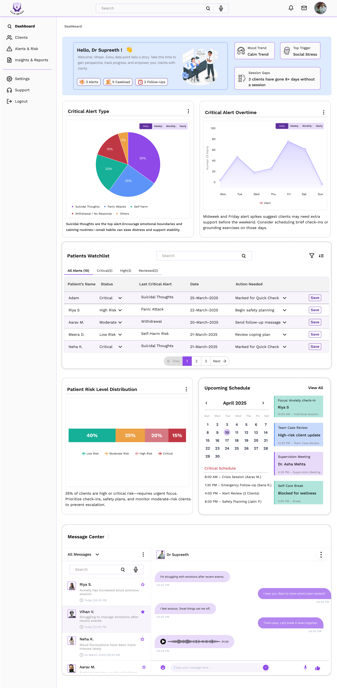
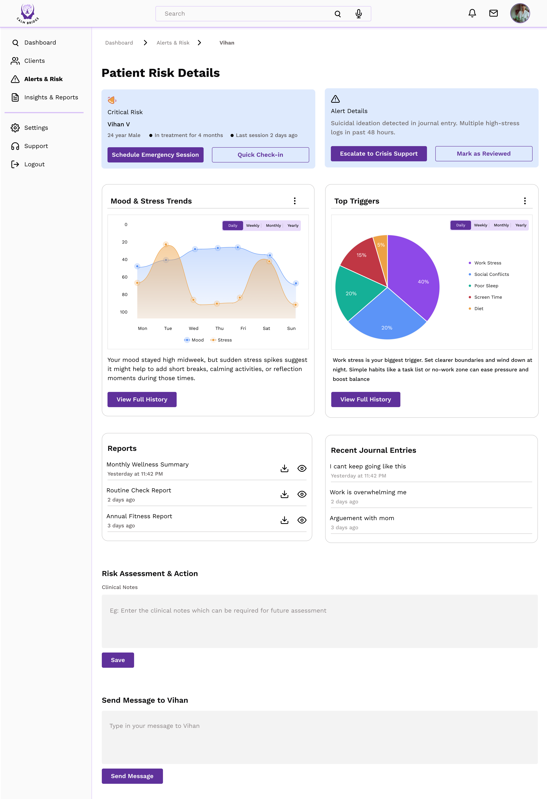
UX Impact
Designed to centralize alerts, patient insights, behavioral trends, communication, and intervention tools in one place, enabling therapists to assess risk faster and make informed decisions with less effort.
Business Impact
Expected to improve workflow efficiency and engagement with critical monitoring tools by providing faster access to actionable patient insights and supporting timely intervention workflows.
Mood Tracking Modals
A guided mood logging flow that helps users capture emotions, identify triggers, and reflect on their experiences with minimal effort.

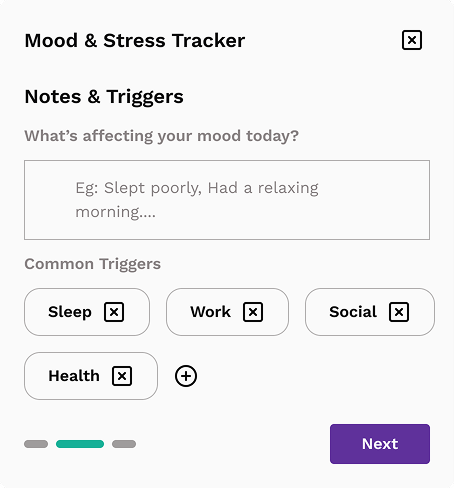
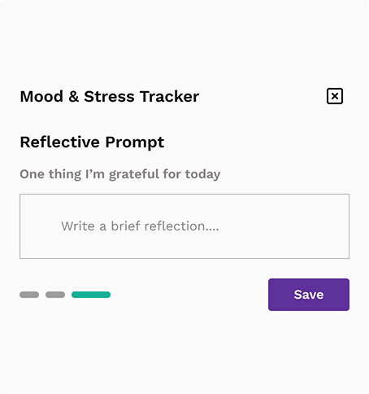
UX Impact
Designed to simplify mood tracking by breaking the process into manageable steps, reducing effort and encouraging consistent self-reflection.
Business Impact
Expected to improve engagement with mood-tracking features by making emotional check-ins easier to complete and supporting long-term habit formation.
What I Learnt
Reflecting on the decisions, trade-offs, and insights that shaped
Key Takeaways
- Emotional trust and privacy drive engagement.
- Therapists need actionable insights, not just data.
- Simplicity and visual clarity reduce cognitive load.
- Small nudges and reminders encourage habit formation.
- Balancing user and therapist needs is critical in mental health products.
What Worked Well
- Focused on one high-impact task per persona.
- Clear separation between Individual and Therapist journeys.
- Dashboard-driven experience simplified decision-making.
- Visual trends and alerts supported quick action.
Constraints & Trade-offs
- 10-day workshop timeline.
- Scope narrowed to two priority workflows.
- Limited usability validation with real users.
Future Scope
- AI-powered risk prediction.
- Personalized wellness recommendations.
- Mobile experience.
- Wearable integrations.
- Advanced therapist collaboration tools.
Great mental health experiences aren't built through more features—they're built through trust, clarity, and timely action.
Discover More Stories
A collection of research-led designs across AI, Enterprise SaaS, and Financial ecosystems.


Tap 2 Pay
Designing a seamless and user-friendly payment experience tailored for the Apple Watch.
View Case Study →
Senior Citizen App
Designing an accessible, inclusive mobile experience that empowers seniors with confidence and independence.
View Case Study →Let’s Connect
Open for opportunities, collaborations, and meaningful design conversations.
Based in Bengaluru, India